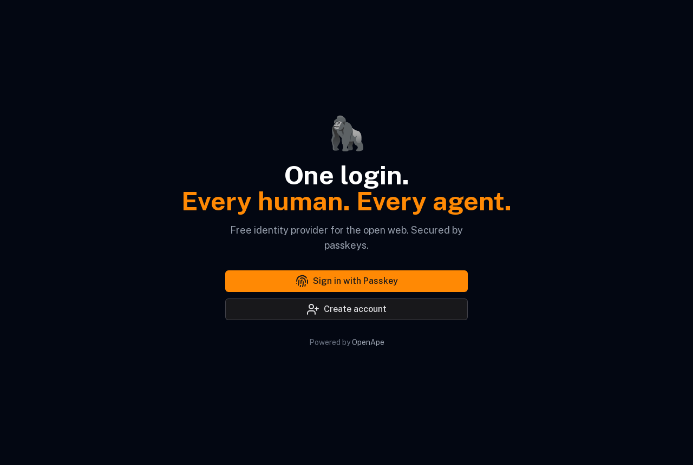
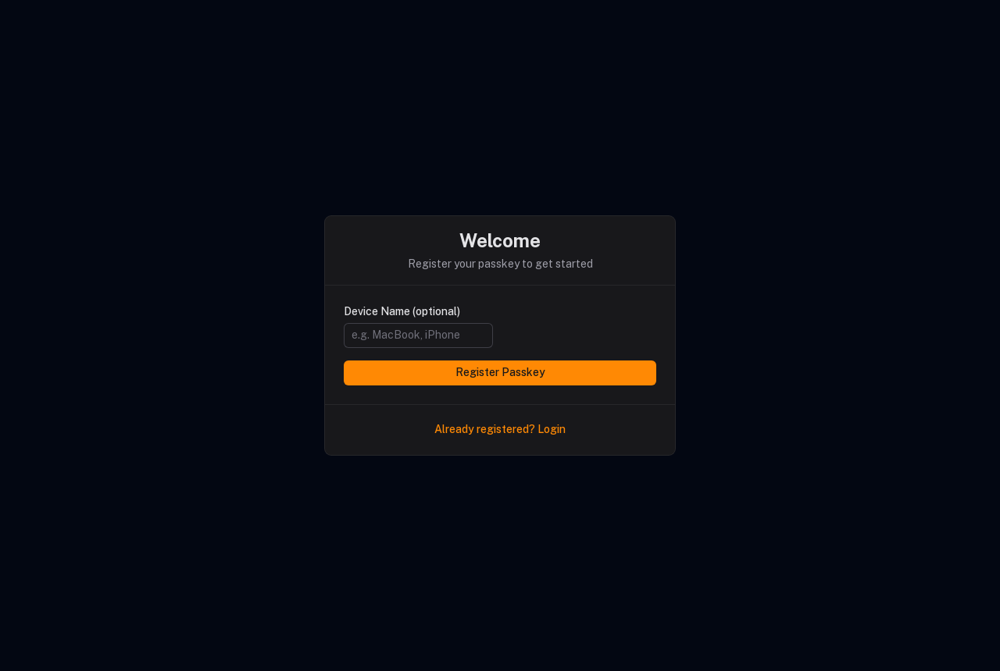
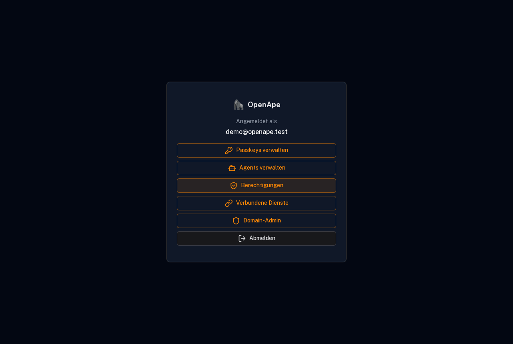
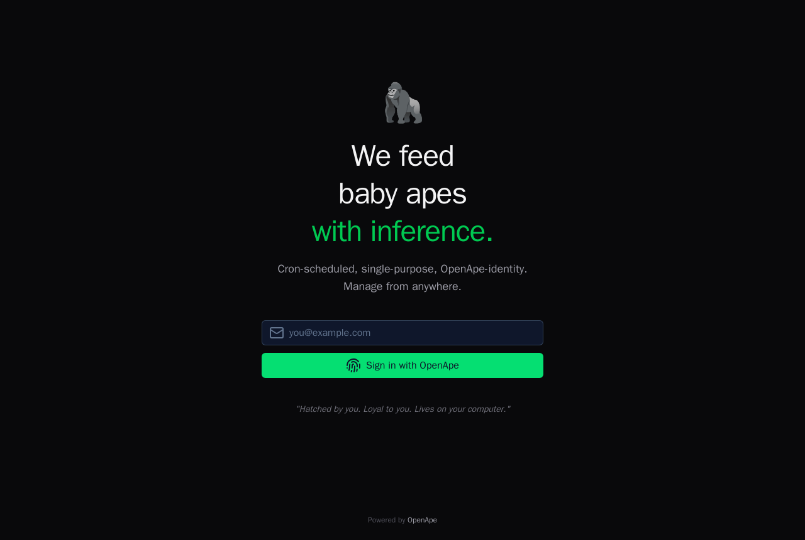
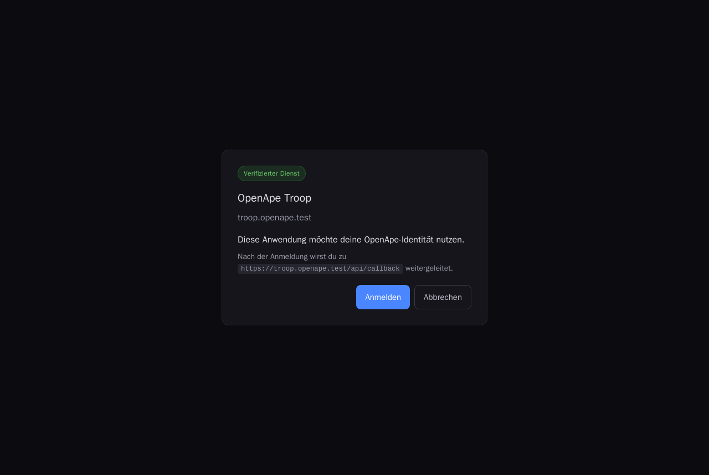
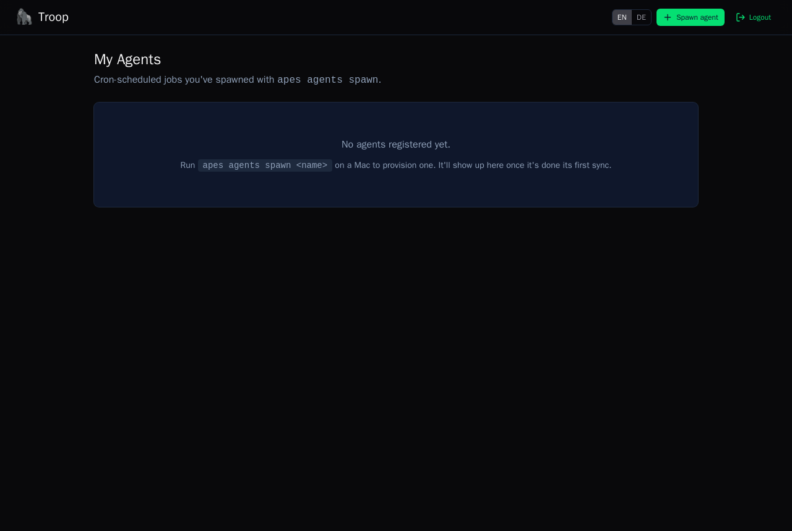
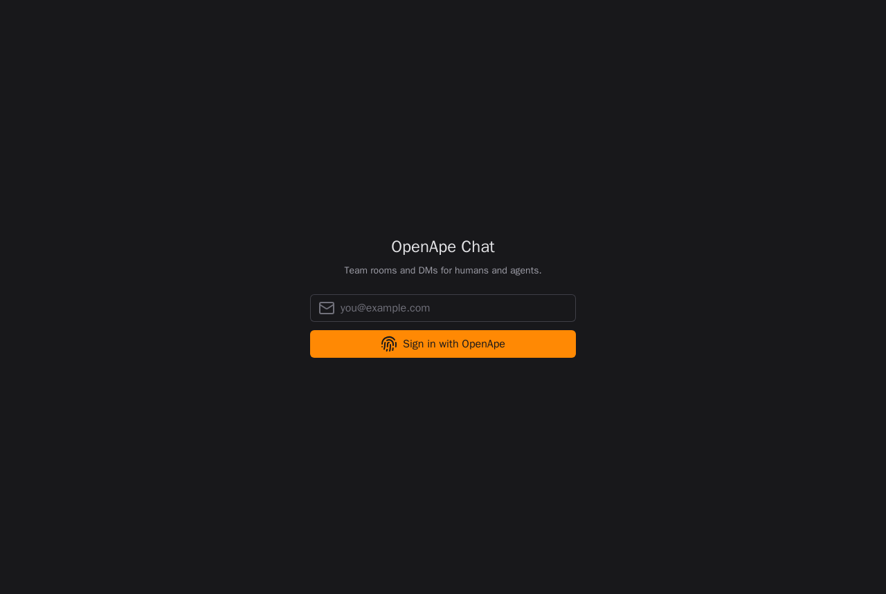
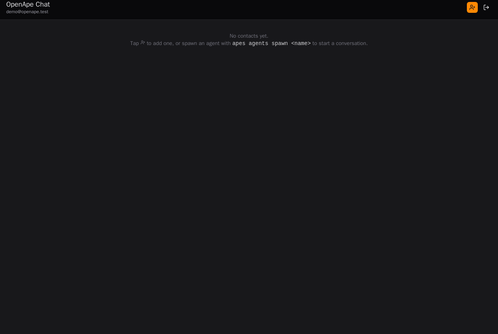
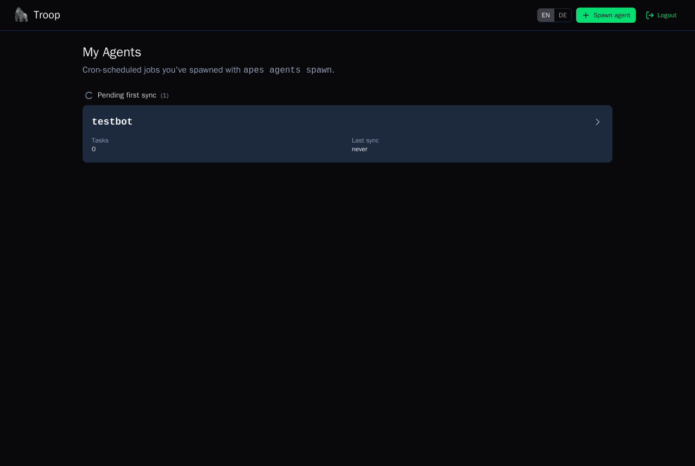
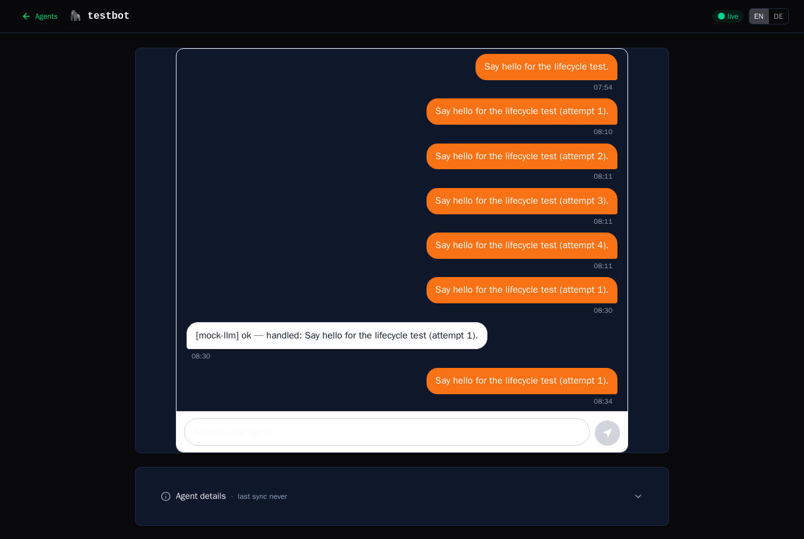

Local Containerized Test Stack
The whole OpenApe web topology — the DDISA IdP plus two SP apps — running
locally in Docker under real https://*.openape.test hostnames, mirroring the
chatty/prod setup (subdomains, TLS, DNS-based DDISA discovery). A headless
Chromium drives three real user flows and captures the screenshots below.
Everything here is generated by the tests —
compose/demo/run.shbrings the stack up and re-captures every screenshot inscreenshots/.
Run it
# Bring the stack up + capture the flows (writes screenshots/ here):
./compose/demo/run.sh
# Clean-room run (regenerates the CA + DBs from scratch first):
./compose/demo/run.sh --fresh # or: FRESH=1 ./compose/demo/run.sh
# The agent-lifecycle runner takes the same flag:
./compose/agent/run.sh --fresh
# Tear everything down (containers + volumes; reset.sh names every profile so
# the nest/mock-llm/playwright containers don't keep the volumes alive):
./compose/reset.sh
# Or just the stack, to poke at it yourself:
docker compose -f compose/local-stack.yml up -d --build
For a full clean-room pass of both flows, reset once then run them without
--fresh(so the second runner doesn't tear down the first's stack):./compose/reset.sh && ./compose/demo/run.sh && ./compose/agent/run.sh.
To open the apps in your own browser, point your Mac at the stack's DNS for
the .test zone (one-time):
sudo mkdir -p /etc/resolver
printf "nameserver 127.0.0.1\nport 5354\n" | sudo tee /etc/resolver/openape.test
# then publish dnsmasq: add `ports: ["127.0.0.1:5354:53/udp"]` to the dns service
Then visit https://id.openape.test, https://troop.openape.test,
https://chat.openape.test (accept the local Caddy CA, or trust it once).
Topology
| Service | Role | URL |
|---|---|---|
dns |
dnsmasq — serves the DDISA discovery TXT at _ddisa.openape.test |
— |
proxy |
Caddy — TLS (own local CA) + host-routing reverse proxy | :443 |
idp |
openape-free-idp — DDISA Identity Provider (passkeys) |
https://id.openape.test |
troop |
openape-troop — SP (agent control plane) |
https://troop.openape.test |
chat |
openape-chat — SP (chat) |
https://chat.openape.test |
playwright |
headless-Chromium runner (on the same network) — captures the flows | — |
Real DNS, real TLS (Node trusts Caddy's CA — verification is not disabled),
and real DDISA discovery: the SPs learn the IdP from the
_ddisa.openape.test TXT record, and the IdP reads mode=allowlist-user from
the same record to drive its consent policy. No public DNS, no id.openape.ai.
Flow 1 — Passkey sign-up at the IdP
A new user registers a WebAuthn passkey (a CDP virtual authenticator answers the ceremony headlessly) and lands on their IdP dashboard.
The IdP landing page:

Registering the passkey (/register?token=…, the link a real user gets by email):

Signed in — the IdP account dashboard:

Flow 2 — DDISA SSO into Troop
The user opens an SP, which discovers the IdP via DNS and redirects them to authorize.
Troop's start page (login email right there):

The DDISA consent screen at the IdP — Troop is asking to use the user's identity
(shown once, then remembered per mode=allowlist-user):

Back on Troop, authenticated:

Flow 3 — One-click SSO into Chat
A second SP, same passkey + IdP session — no second passkey prompt.
Chat's start page:

Signed into Chat as demo@openape.test via SSO:

Flow 4 — Agent lifecycle (spawn → run → destroy)
The full control-plane round-trip, all in containers: a nest daemon binds to
the local Troop, then an agent is spawned, run (it answers a chat message
via a mock LLM — no ChatGPT subscription touched), and destroyed — driven by
compose/agent/run.sh.
Spawned — the agent appears in Troop's dashboard:

Run — the owner sends a message and the agent replies through Troop; the
[mock-llm] reply proves the spawn → bridge → LLM → reply path end-to-end:

Destroyed — the agent is torn down and Troop is empty again:

How it's wired (notes for the next person)
- One parameterized Dockerfile (
compose/Nuxt.Dockerfile) builds all three Nuxt apps. The build runs the modules'prepare(stub +nuxi prepare) beforeturbo build, and the runtime stage pins the arch-matched@libsql/*native binding (Nitro can't trace it). - Module runtimeConfig env names: the apps read
NUXT_OPENAPE_IDP_*/NUXT_OPENAPE_SP_*at runtime (the configKey-derived names) — the plainNUXT_OPENAPE_*names are only read at build time. - DDISA record: lives at
_ddisa.openape.test(the spec name) and is parsed asv=ddisa1 idp=<url>; mode=<mode>— a space betweenvandidp, then;-separated.mode=allowlist-usergives consent-once-remembered. - The IdP's registration email uses Resend; locally there's no key, so
run.shreads the freshly-minted registration token straight from the IdP DB (the token is persisted before the email send) — standing in for the link.